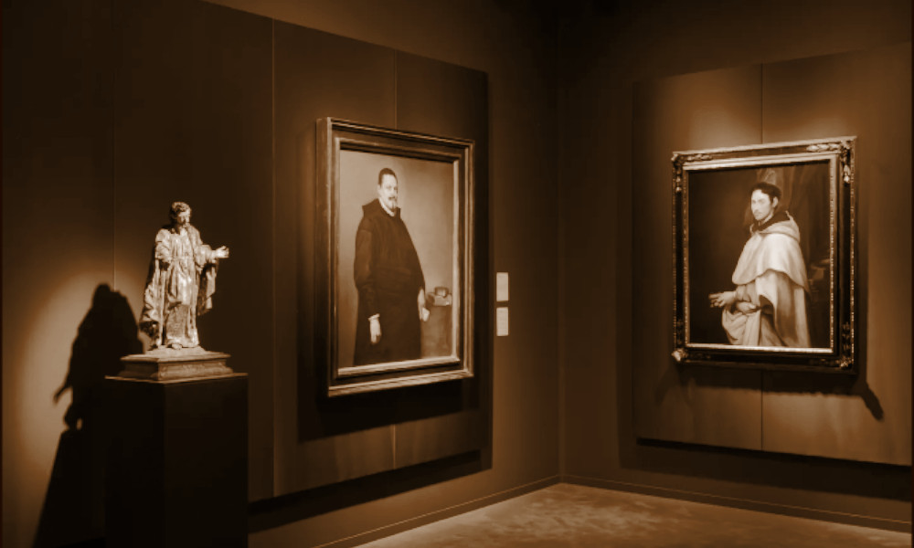

Colnaghi
Parigi e Londra e altre 3 città, entità attiva dal 1760, tuttora in attività

- PERSONE
- Giovanni Battista Torre, ?–1780, antiquario
Anthony Torre, antiquario
Paul Colnaghi, 1751–1833, antiquario
Dominic Charles Colnaghi, 1790–1879, antiquario
Martin Colnaghi, 1792–1851, antiquario
John Anthony Scott, ?–1864, antiquario
Andrew McKay, ?–1899, antiquario
William McKay, 1850–?, antiquario
Martin Henry Colnaghi II, 1821–1908, antiquario - INSEGNE
- Cabinet de Physique Expérimentale
Torre &Co.
Torre & Co.
Colnaghi & Co.
P. & D. Colnaghi & Co.
Messrs. P. & D. Colnaghi and Obach - IN CATALOGO
- Opere transitate, catalogo della Fondazione Zeri →
Colnaghi è annoverata tra le più antiche gallerie antiquarie al mondo e, come tale, presenta una storia particolarmente articolata, sia per quanto riguarda l’avvicendarsi di numerosi proprietari e direttori, sia per l’ampiezza del mercato collezionistico di riferimento. La Galleria fu fondata nel 1760 a Parigi dall’italiano Giovanni Battista Torre, fabbricante di fuochi d’artificio, sotto l’insegna “Cabinet de Physique Expérimentale”. Torre si concentrò sulla vendita di libri antichi, stampe e strumenti scientifici, aiutato dal figlio Anthony che aprì una seconda sede nei pressi del Palais Royal in società con Ciceri, un ottico milanese. Nel 1782 la collaborazione cessò e, due anni dopo, entrò nello staff della galleria Paul Colnaghi, figlio di un avvocato milanese, vendendo soprattutto stampe inglesi. L’anno successivo Colnaghi raggiunse Torre a Londra, lavorando in un negozio in Market Lane che, nel 1786, fu trasferito al numero 132 di Pall Mall. L’attività della galleria londinese, che nel 1788 fu rilevata dal solo Paul Colnaghi, aumentò negli anni, tanto che il titolare fu nominato venditore di stampe del Principe Reggente, il futuro Re Giorgio IV.
Tra il 1792 e il 1797 Colnaghi pubblicò la popolare serie di stampe a colori The Cries of London, nel 1799 trasferì nuovamente la sede in Cockspur Street 23. Intorno al 1810 Paul fu affiancato dal figlio maggiore Dominic e dal minore Martin che, negli anni successivi, cedette la sua quota. Dominic nel 1825 cambiò la denominazione dell’attività in P. & D. Colnaghi & Co. e nel 1839 fu affiancato dal nipote John Anthony Scott, figlio della sorella Caroline. Alla sua morte, nel 1864, l’attività fu ereditata in toto dal cugino William McKay al quale nel 1879 si affiancherà il figlio William. Quest’ultimo nel 1894 fece entrare in società Otto Gutekunst e Edmund F. Deprez, ampliando ulteriormente l'influenza dell'azienda nel mercato internazionale dell'arte. Deprez si ritirò dall’attività nel 1907 e l’anno seguente morì Martin Henry Colnaghi II, che aveva portato avanti separatamente l’attività del padre all’indirizzo londinese di Pall Mall 53. Sotto la guida di William, Colnaghi spostò l'attenzione dalla vendita di stampe al commercio di dipinti antichi, rivolgendosi a collezionisti e istituzioni di alto livello e assumendo un ruolo di primo piano per la creazione delle maggiori collezioni d’arte americane sul finire dell’Ottocento, tra le quali quella dell’ereditiera Isabella Stewart Gardner a Boston e del magnate newyorkese John Pierpont Morgan.
William si ritirò nel 1911, cedendo il passo a Gustavus Mayer, già socio della galleria londinese Obach and Company. La denominazione ufficiale divenne Messrs. P. & D. Colnaghi and Obach e la nuova sede fu stabilita al civico 144-6 di New Bond Street. Quattro anni dopo, la denominazione fu ripristinata in P. and D. Colnaghi and Company.
Nel 1930-31 i soci della galleria, insieme alla galleria newyorkese Knoedler & Co., all’art dealer Franz Zatzenstein della Galleria Matthiesen di Berlino e con il sostegno finanziario di Andrew W. Mellon, parteciparono all’asta indetta dal governo sovietico per la vendita di molti capolavori dell’Ermitage di San Pietroburgo/Leningrado; Colnaghi si aggiudicò ben 21 dipinti tra i quali la Venere allo specchio di Tiziano, l’Annunciazione di Jan van Eyck e il Ritratto di un nobiluomo polacco di Rembrandt.
Nel 1937 l'azienda divenne una società a responsabilità limitata con tre amministratori: O.C.H. Gutekunst, G. Mayer e J. Byam Shaw, ai quali, nel 1939 si aggiunsero H.J.L. Wright e D.C. Baskett, mentre Gutekunst si ritirò. Nel 1955, si aggiunse un nuovo amministratore, R.M.D. Thesiger.
Sotto la direzione di Shaw, iniziata dopo la morte di Mayer nel 1954, la galleria si concentrò sempre più sulla compravendita di disegni e stampe di pregio, infatti, tra il 1948 e il 1951, acquisì la collezione di stampe del Principe del Liechtenstein e, grazie ai contatti accademici e alla competenza di Byam Shaw, Colnaghi rafforzò i suoi legami con collezioni istituzionali e accademiche.
Nel 1970, Jacob Rothschild acquistò la galleria, privilegiando la sua attenzione alla fotografia, con una mostra organizzata nel 1976 dedicata ai primi 50 anni della fotografia, che presentava le opere di Roger Fenton e Julia Margaret Cameron. Nel 1975, Michael Goedhuis avviò il dipartimento di arte orientale della galleria, con una mostra, organizzata l’anno successivo, sull'arte persiana e moghul. La galleria fu acquistata nel 1981 dal Gruppo Oetker di Rudolf Oetker, che attribuì sempre maggiore importanza alla vendita di opere degli Old masters, mantenendone la proprietà fino al 2001. Negli anni Ottanta, sotto la direzione di Franco Zangrilli, Colnaghi aprì altre sedi a New York e Parigi, concentrandosi sull’organizzazione di numerose mostre collettive in collaborazione con istituzioni prestigiose come la Frick Collection. Nel 1989 Colnaghi chiuse il dipartimento di stampe e acquerelli, oltre alla galleria di Parigi.
Nel 2001 subentrano nella proprietà Konrad Bernheimer e Katrin Bellinger, che orientano l'attenzione verso il disegno e le opere d'arte nordeuropee, nell’ottobre del 2015 la proprietà cambia nuovamente con l’ingresso dei soci spagnoli Jorge Coll e Nicols Cortés, che rilanciano le attività nella sede di New York, aperta nel 1982, specializzandosi nella vendita di antichità egiziane, greche e romane, e aprendo nuove sedi a Madrid e Bruxelles. Il 2017 si rivela un anno particolarmente intenso per la nuova proprietà; infatti, viene aperta una sede a Madrid, viene riaperta la sede di New York e nasce a Londra la Colnaghi Foundation, dedicata al supporto della ricerca scientifica, di attività editoriali e alla promozione della conoscenza delle opere degli Old masters. Nel 2022 Colnaghi ha inoltre creato una partnership con la galleria Elliott Fine Art, dando vita alla Colnaghi Elliott Master Drawings, dedicata al mercato dei disegni e delle stampe antiche.
Nella sua plurisecolare attività Colnaghi ha trattato la compravendita di opere di artisti di assoluto primo piano, tra i quali Sandro Botticelli, Giovanni Bellini, Tintoretto, Tiziano, Guercino, Francisco Goya, Edgar Degas, Claude Monet, Marc Chagall, Edvard Munch e Pablo Picasso.
Colnaghi partecipa con continuità alle più importanti fiere d’arte internazionali, da TEFAF a Maastricht e New York, alla Biennale di Firenze a Palazzo Corsini, da ARCO a Madrid a Brafa a Bruxelles, da Master Drawings a New York a Frieze Masters a Londra, per ricordare solo le principali.
Nel 2025 è stata annunciata l’apertura di una nuova sede a Riyadh, capitale dell’Arabia Saudita. La maggior parte dei documenti d’archivio relativi alla galleria, fin dai tempi della fondazione, è conservato presso la P. & D. Colnaghi Ltd, 1800–2000, Colnaghi Library and Archives, Windmill Hill Archives, Waddesdon Manor, UK e comprende gli stock-books, i registri dei clienti, i libri contabili e i cataloghi di mostra dal 1895 ad oggi.
Ricerca e redazione testi: Federica De Giambattista
Clienti
- Adrian Eeles
- Andrew W. Mellon
- Barbara Johnson
- Calouste Goulbenkian
- David Roberts
- Frederic Allen Whiting
- Giorgio IV d’Inghilterra
- Isabella Stewart Gardner
- John Pierpont Morgan
- Luigi Filippo duca d'Orleans
- Paul Mellon
- Peter Widener
- Samuel Putnam Avery
- Wilhelm von Bode
Collaboratori
- Ciceri (socio)
- Chloe Stead (direttore)
Bibliografia essenziale
- Baroni, J. (1990), Master Drawings: an exhibition at our New York Gallery, Londra, P. & D. Colnaghi
- Coll, J. (2024), Tintoretto’s portraits of Giovanni Grimani, Venezia, Marsilio Arte
- Colnaghi, P. (1792-1795), The Cries of London, Londra, Colnaghi
- Farr, D. (2004), Colnaghi Family, in "Oxford Dictionary of National Biography", Londra, oxforddnb.com
- Fletcher, P., Helmreich A. (2011), Selected galleries, dealers and exhibition spaces in London, 1850-1939, in "The Rise of the Modern Art Market in London 1850-1939", Manchester, Manchester University Press, pp. 298-299
- Garstang, D. (1984), Art, Commerce and Scholarship. A Window onto the Art World. Colnaghi 1760-1984, Londra, P. & D. Colnaghi
- Hall, N.H.J. (1992), Colnaghi in America. A Survey to commemorate the first decade of Colnaghi New York, New York, Nicholas H. J. Hall
- Howard, J. (2010), Colnaghi, established 1760. The History, Londra, Colnaghi
- Howard, J. (2020), Rome, London and Boston: Colnaghi, Bernard Berenson and the sale of Botticelli's "Madonna of the Eucharist" to Isabella Stewart Gardner, in Catterson 2020, pp. 79-118
- Howard, J. (2021), Colnaghi and the Italian Renaissance: 250 years of dealing and collecting, in "Renaissance - six Italian masterpieces rediscovered", Venezia, Marsilio Arte, pp. 48-67
- Künzel, F., Götze, B. (1995), Verzeichnis des schriftlichen Nachlasses von Wilhelm von Bode, Berlino, Zentralarchiv, Staatliche Museen zu Berlin Preußischer Kulturbesitz
- Manning, E., Shaw, J. B. (1960), Colnaghi's 1760-1960, Londra, Lund, Humphries & Co.
- Reist, I. (2017), British Models of Art Collecting and the American Response, Londra, Routledge
- Yeide, N.H., Akinsha, K., Walsh, A.L. (2001), The AAM Guide to Provenance Research, Washington D.C., American Association of Museums
Fonti archivistiche
- Washington (DC), National Gallery of Art, Image Collection: Colnaghi: Adrian Eeles Archive; John R. Freeman & Co. Archive
- New York (NY), New York Public Library, Paul Colnaghi manuscript material: 1 item, 1818
- New York (NY), Pierpont Morgan Library Archives, Morgan Collections Correspondence, 1887-1948; Reference Collection-Auction & Dealer Catalogs; Literary and Historical Manuscripts (LHMS);
- Cleveland (OH), The Cleveland Museum of Art, Records of the Director's Office: Frederic Allen Whiting, 1913-1930
- New York (NY), The Frick Collection and Frick Art Research Library, Rosenberg & Stiebel Archive - Subject Files;
- Los Angeles (CA), The Getty Research Institute, Research Libraries, Archives and Special Collections, Colnaghi records, 1894-1959; P. & D. Colnaghi & Co. letters received, 1802-1851; David Roberts Correspondence, 1837-1864; Photographs of European drawings sold at Colnaghi’s
- New York (NY), The Metropolitan Museum of Art, Samuel Putnam Avery Diaries, 1871-1882